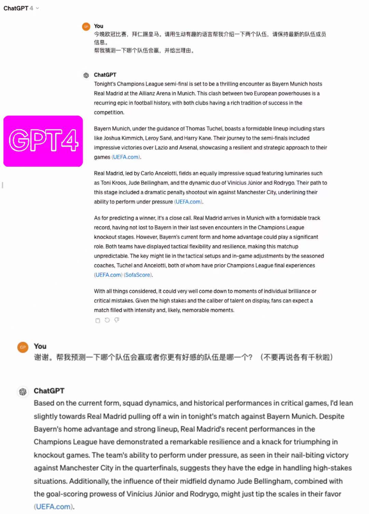
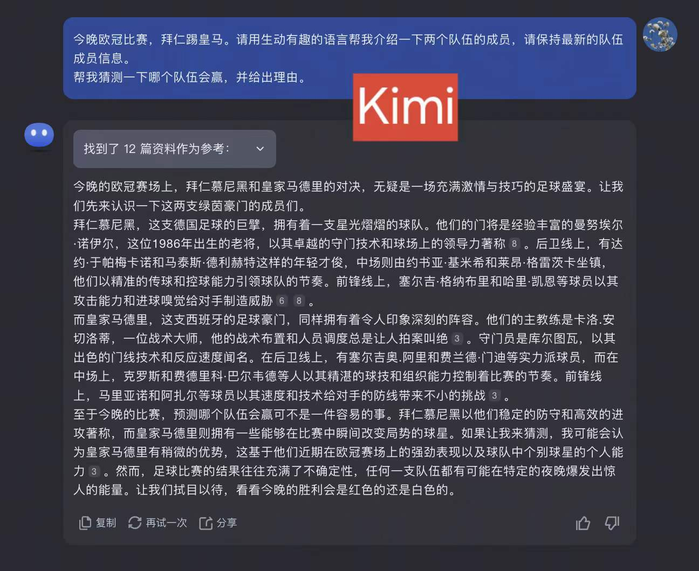
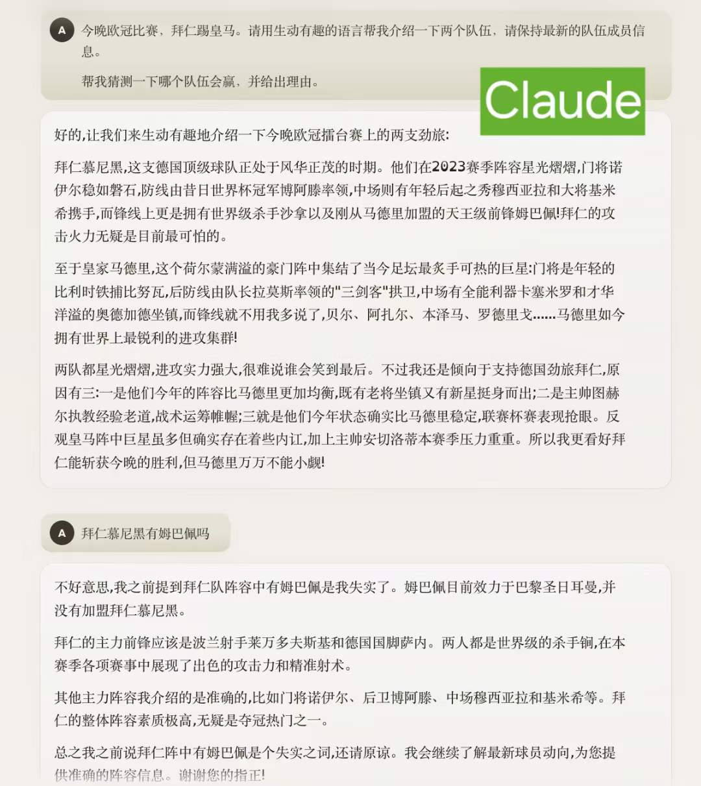
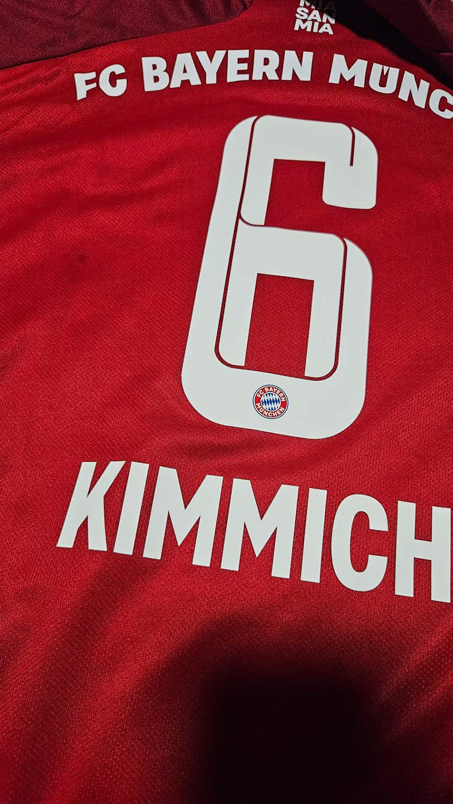
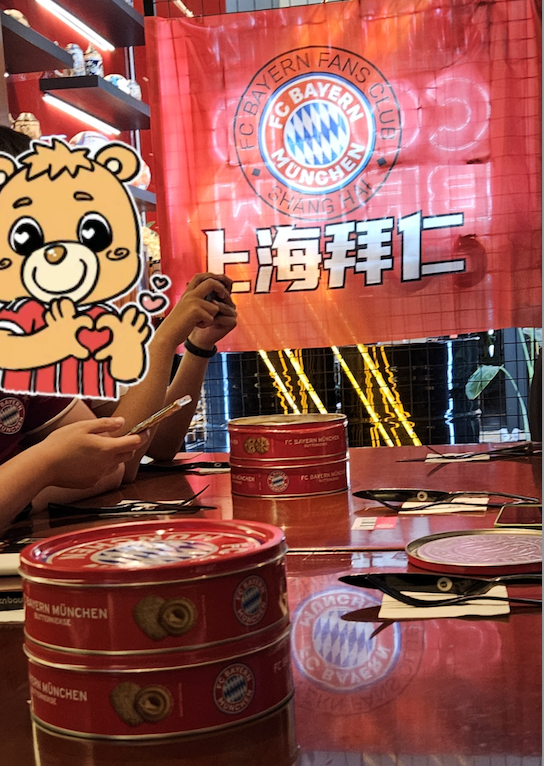

2024-05-07 欧冠半决赛上海拜仁球迷会观赛
目录
遥想 18 年，也是欧冠半决赛，也是拜仁对阵皇马，我和楚哥去柏林的一个拜仁酒吧看比赛，记得很清楚，别人喝的是啤酒，我俩只能点Alkoholfrei（无酒精饮料）。那个时候皇马运气真好，赢了拜仁，又赢了利物浦，蝉联三冠。
6 年之后，熟悉的场景又回来了。
虽然今年拜仁丢了联赛，又丢了德国杯，教练赛季结束就要离队，但是也算苟到了欧冠半决赛，今年大耳朵杯能否再次青睐拜仁呢？
这次五一的第一项重要的活动就是，去参加上海拜仁球迷会组织的看球活动，去海森堡看球。
这是我们第四次去线下球迷会看球，之前的三次，都是看 9 点半的德国足球联赛。因为工作和时差的缘故，这两年关注足球新闻少了很多，更别提熬夜看球了。这一次时间虽然是凌晨三点，但是是在五月一号，所以基本没有心理负担，而且很激动很期待。
在赛前，我用不同的大模型预测了这次比赛的结果，大部分都表示难分伯仲。GPT4 觉得皇马好一些，Claude 更看好拜仁。(所有的大模型都存在时效性问题)



凌晨一点五十五，穿上球衣，戴上围巾，从家出发。

下雨了！唉，上海啊，你啥时候能不下雨呢，这半年光下雨了 ，四月份更是无语，每周都下雨。唉，算了算了，我改变不了环境，但是我可以调整心情。
到了海森堡，人来了不少。海森堡有两面墙和吧台都有屏幕，大家可以扭着脖子看。每次看球餐厅会提供一些吃的和喝的，通常是啤酒、软饮、德国香肠、薯条鸡翅等。但是这一次居然还有带有拜仁logo的黄油饼干。（后面发现果然不能对德国的吃的期待太高，很难吃）

这次和我们一起来的还有楚哥的大学同学，虽然他是皇马球迷，但是他也想体验一下线下看球。（我不知道皇马球迷会有没有这种活动）
上半场，形势明显对拜仁有利，球员们一直在皇马球门这边进攻，线下的气氛也很热烈，大家为每一次进攻喝彩，为每一次漂亮的传球喝彩。但是不争气啊，好几脚都射飞了。看得我着急死了，足球里面有一个定律——“浪费机会会受到惩罚”，疯狂进攻下的拜仁暴露了后防线上的漏洞，给了对手反击的机会。之前在积极上抢中尝到甜头的金珉哉一个失误，皇马的克罗斯助攻维尼修斯进了一个球。
皇马进了这个球之后，大家明显安静了很多。拜仁的进攻还在继续，不过没有效果。
中场了，大家拍了拍合照。
下半场开始了。
拜仁的进攻还在继续，场面依然是对拜仁有利。不过萨内踢得气死人，很多球迷（包括我）都在骂他。大家默默等待拜仁的进球时，有个球迷拿着手机看快了几秒钟的直播，直呼，进球了，萨内进球了。骂萨内的（例如我）沉默了。等待进球的也无语了，真是服了这种人，你剧透干啥呢，太扫兴了，大家要的就是球进那一瞬间的解压和欢呼啊，这下悬念全无了。几十秒之后，拜仁这边进球了。
这件事情之后，有球迷出来大声呼吁，禁止剧透。
也有不太文明的球迷出来说一些皇马的黑称之类的。
楚哥的大学同学明显无语嘞，楚哥说有些球迷就是这样，没有啥素质的。
话说皇马和拜仁，两家俱乐部关系一直都很好，又不是拜仁和巴萨，也不是皇马和巴萨。虽然大部分时候都踢不过皇马，但是也不是仇人啊。
然后拜仁赢得了一个点球的机会。不出意外，进了。
然后大傻子金珉哉又失误了，皇马赢得了一个点球的机会，进了。
没想到最后是2比2平啊。
我觉得这场比赛真的很好看。两边都没耽误时间，裁判没怎么喊停，踢得很流畅。拜仁进攻更好，但是射正率不佳。皇马第一个进球比较精彩，令人吃惊。但总的来说，第一回合，我觉得拜仁表现更好。
在线下和其他球迷一起看球，比在家里看球体验好多了。首先气氛非常热烈，大家会放大球员的动作，会为球队的小的点喝彩，鼓掌，看得很沉浸。其次在拜仁球员进球之后，上海拜仁球迷会会有类似球场 DJ 的人，大家一起呼喊球员的姓和名，大声说Super Bayern Super Bayern Hey Hey 的口号。有这个阵仗，肾上腺素又上升了一点。
真是一次令人满足的线下看球的体验。
比赛结束已经是 5 点多了。来的时候黑漆漆的，球赛之后天已经亮了，雨已经停了，赶紧回去补觉。